• 고분 (무덤)
| 고구려 |
[국내성 시기] 돌무지무덤
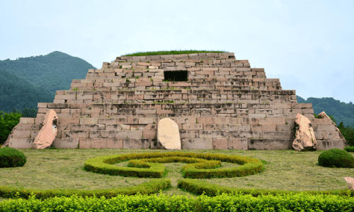 계단식 무덤, 돌로만 이루어짐 백제 계단식 돌무지무덤과 다른 점 : 봉분 없음 호석 : 무덤을 지지해주는 돌 대표 고분 : 장군총 |
[평양성 시기] 굴식 돌방무덤
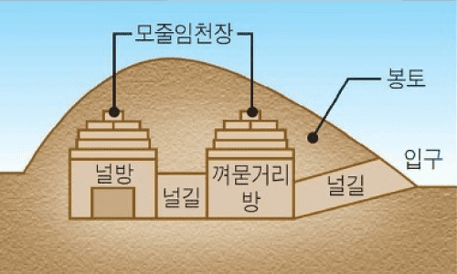 굴로 들어가면 돌로된 방이 나오는 구조 모줄임 천장 방식을 많이 사용 겉모양은 무덤마다 다름 다양한 벽화가 그려져 있음 대표 고분 : 강서 대묘 |
|---|---|---|
출토된 벽화
|
||
| 백제 |
[한성 시기] 계단식 돌무지무덤
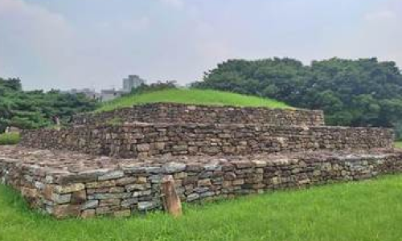 고구려의 돌무지무덤과 모양이 비슷함 백제 건국 세력이 고구려 계통임을 보여줌 3계단 위에 봉분 : 고구려와 다른점 대표 고분 : 석촌동 고분 |
[웅진 시기] 벽돌무덤
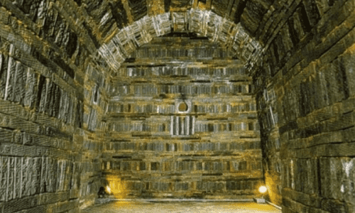 벽돌을 쌓아서 만든 무덤 중국 남조의 영향을 받음 천장은 돔 및 아치형 구조 대표 고분 : 무령왕릉
|
|
[사비 시기] 굴식 돌방무덤
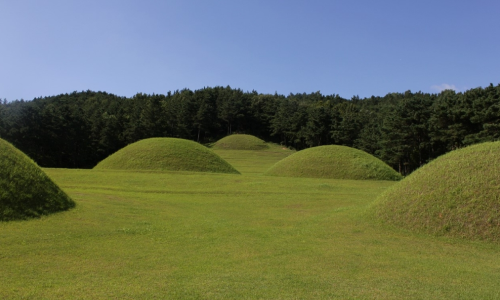 규모는 작지만 세련된 형태 중국 남조의 영향을 받음 대표 고분 : 능산리 고분군 |
||
| 신라 |
[통일 이전] 돌무지덧널무덤
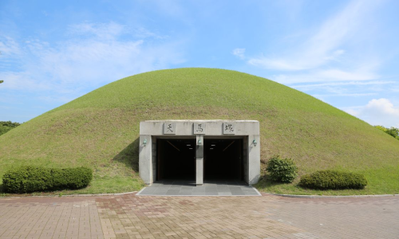 나무 덧널 위에 돌을 쌓고 그 위를 흙으로 덮음 도굴이 어려워 껴묻거리(부장품)가 많이 출토됨 대표 고분 : 천마총, 황남대총, 금관총 |
[통일 이후] 굴식 돌방무덤
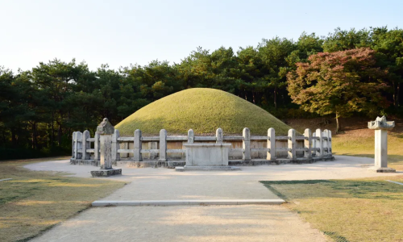 무덤 주위에 12지 신상을 두름 대표 고분 : 김유신묘 |
출토된 유물(천마총)
|
||
| 발해 |
[정혜공주 묘] 굴식 돌방무덤
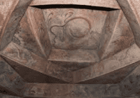 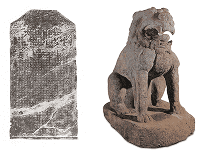 문왕의 딸인 정혜공주의 묘 고구려 영향을 받아 모중임 천장 구조가 특징 출토된 유물 : 묘비, 돌사자상 |
[정효공주 묘] 벽돌무덤
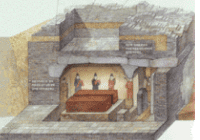 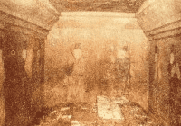 문왕의 딸인 정효공주의 묘 무덤 위에 탑을 쌓은 독특한 양식이 특징 벽화가 그려져 있음 |